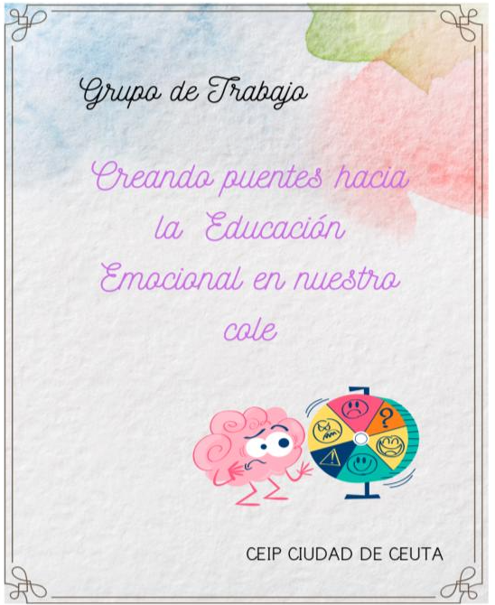

La educación emocional es un proceso educativo que potencia la esfera afectiva para desarrollar integralmente a las personas, mejorando su bienestar personal y social. Como señala el Dr. Rafael Bisquerra, la Educación Emocional tiene como objetivo el desarrollo de las Competencias Emocionales: consciencia emocional, regulación emocional, autonomía emocional, competencia social y habilidades para la vida y el bienestar. Su objetivo principal es ayudar a las personas a comprender, gestionar y utilizar sus emociones de manera efectiva para afrontar los desafíos diarios.
La educación emocional es un proceso que debe empezar a fomentarse desde la primera infancia.
DESCRIPCIÓN DEL GRUPO DE TRABAJO

Grupo de trabajo CEIP Ciudad de Ceuta. 2025. Creando puentes hacia la educación emocional en nuestro cole(CC BY-SA)
Este Grupo de Trabajo (G.T) nace de la inquietud de un grupo de docentes del CEIP Ciudad de Ceuta ante la necesidad de formarse para poder trabajar la Educación Emocional en las aulas, tan necesarias y demandadas por la Administración.
Tomando como referencias las líneas prioritarias del MEFPD, esta formación estaría encuadrada en la “Promoción de la convivencia y el bienestar emocional” y sería un complemento al "Plan de Bienestar” que se encuentra recogido en Plan de Convivencia del Centro.
Trabajar la Educación Emocional es primordial, se debe enseñar al alumnado desde los primeros inicios a reconocer y poner nombre a sus emociones para posteriormente poder ir regulándolas, utilizando para ello diversas técnicas y programas. En palabras del Dr. Martín-Loeches, las emociones influyen en los procesos cognitivos de forma muy significativas y de múltiples maneras. Las emociones no solo influyen en el razonamiento sino también lo hacen en la atención, percepción, memoria y lenguaje.
En palabras del catedrático Francisco Mora, se aprende mejor cuando el cerebro se emociona y siente curiosidad que cuando lo hace con el simple acto memorístico. El cerebro solo aprende si hay emoción.
Uno de los objetivos es poder ampliar y aplicar los resultados de este grupo de trabajo en cursos posteriores.
No se trata de fomentar las emociones en el aula, sino de enseñar con emoción. La Educación Emocional va más allá de una clase concreta, está presente en todas las áreas a lo largo de todos los cursos.
Poco a poco vamos siendo conscientes del impacto que las emociones tienen en nuestras vidas. Como docentes se nos pide que hagamos más hincapié en la Educación Emocional… pero, ¿cómo hacerlo?.
PRIMERA FASE DEL GRUPO DE TRABAJO
La primera parte consiste en una parte teórica y formativa estará coordinada por Mª Mercedes Gil Zarzuela, maestra de Pedagogía Terapéutica y Audición y Lenguaje del centro que posee la certificación de “Especialista en Inteligencia Emocional. Estudio científico desde la psicología, la neurociencia y la salud por el Instituto Psicobiológico de estudios Multidisciplinares y certificada por la Universidad Internacional Isabel I de Castilla”, aportando los conocimientos adquiridos en el III Congreso de Educación Emocional por ASEDEM que se celebra en el mes de octubre en Laguna del Duero, Valladolid. La presencia de la orientadora del centro Elena Gómez Muñoz que además de formar parte del G.T también asesorará en la parte teórica y formativa. Por último, contaremos con la presencia de una asesora externa, la psicóloga Isabel Mª Hernández Muriel, psicóloga sanitara que nos expondrá los principales problemas en salud mental que tienen actualmente los niños y niños en edad escolar, aportando pautas que nos ayuden a detectar dichos problemas y como poder actuar. Con toda la información obtenida realizaremos un dossier que nos sirva como manual.
En primer lugar, formación, no se puede enseñar al alumnado a gestionar sus emociones si los propios docentes no saben identificar las suyas propias. Es aquí donde se enmarcaría la primera parte de este grupo de trabajo, el sentar unas bases mínimas que sirvan para poder trasladarlas a los alumnos y alumnas.
En segundo lugar, ponerlas en práctica
SEGUNDA FASE DEL GRUPO DE TRABAJO
Una vez establecidas las bases de la Educación Emocional y analizado nuestro contexto, seleccionaremos recursos con licencia libre para trabajar la Educación Emocional en las aulas, así como la adaptación de aquellos recursos que más se adapten a nuestro alumnado poniéndolos posteriormente en práctica. Siempre y cuando estos recursos tengan licencia abierta y/o el autor nos autorice su uso y modificación.
Selección de recursos con licencia abierta y/o la autorización de su autor para su uso y modificación y creación de recursos abiertos y adaptados al contexto educativo para posteriormente ponerlos en práctica en las aulas. Se puede encontrar multitud de recursos y/o materiales para trabajar las emociones, pero ¿son los adecuados para el alumnado, para un contexto determinado? Responder a esta pregunta se centra la segunda parte del grupo de trabajo.